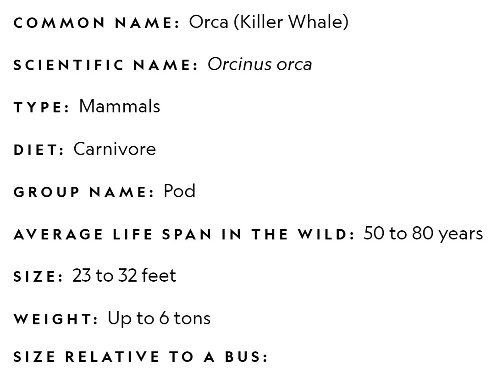

OVERVIEW
The killer whale or orca (Orcinus orca) is a toothed whale belonging to the oceanic dolphin family, of which it is the largest member. It is recognizable by its black body with a white underside and patches near each eye. Killer whales have a diverse diet, although individual populations often specialize in particular types of prey. Some feed exclusively on fish, while others hunt marine mammals such as seals and other species of dolphin. They have been known to attack baleen whale calves, and even adult whales. Killer whales are apex predators, as no animal preys on them. A cosmopolitan species, killer whales can be found in all of the world's oceans in a variety of marine environments, from Arctic and Antarctic regions to tropical seas, absent only from the Baltic and Black seas, and some areas of the Arctic Ocean. They are highly social; some populations are composed of very stable matrilineal family groups (pods) which are the most stable of any animal species. Their sophisticated hunting techniques and vocal behaviours, which are often specific to a particular group and passed across generations, have been described as manifestations of animal culture. Orcas are protective of their young, and other adolescent females often assist the mother in caring for them. Mothers give birth every three to ten years, after a 17-month pregnancy. They give birth to one baby at a time, which may nurse for up to two years. In most cases, the bond between juvenile and mother will eventually weaken, and the young orca will go its own way, but in some pods, the juvenile may stay with the pod it was born into its entire life
RANGE
While killer whales can be found around the world, they are much more common in highly productive areas of cold-water upwelling; including the Pacific Northwest, along northern Norway's coast in the Atlantic, and the higher latitudes of the Southern Ocean. In addition to being found in colder water, killer whales also have been seen in warm water areas such as Florida, Hawaii, Australia, the Galapagos Islands, the Bahamas, and the Gulf of Mexico, and more temperate waters such as New Zealand and South Africa. Such sightings are infrequent, but they do demonstrate the killer whales' ability to venture into tropical waters. Rarely, killer whales have been seen in fresh water rivers around the world such as the Rhine, the Thames, and the Elbe. One even traveled some 177 km (110 mi.) up the Columbia River in pursuit of fish.
DIET
Orca is at the top of the food chain and have very diverse diets, feasting on fish, penguins, and marine mammals such as seals, sea lions, and even whales, employing teeth that can be four inches long. They are known to grab seals right off the ice. They also eat fish, squid, and seabirds. Orcas hunt in deadly pods, family groups of up to 40 individuals. There appear to be both resident and transient pod populations of orcas. These different groups may prey on different animals and use different techniques to catch them. Resident pods tend to prefer fish, while transient pods target marine mammals. All pods use effective, cooperative hunting techniques that some liken to the behavior of wolf packs.
Threats
There are three main reasons for the decline in Southern Resident Orcas: lack of food, noise pollution, and chemical pollution. Noise pollution from vessels can prevent Southern Resident Orcas from using echolocation to catch prey. Anthropogenic chemical pollutants like PCBs bioaccumulate in the tissues of orca which cause endocrine and immune system disruption when they starve. These two factors are linked to the primary reason for their decline- which is lack of food. Unfortunately for these whales, they eat almost nothing but Chinook salmon which make up of more than 80% of their diet. Today, two-thirds of orca pregnancies fail due to nutritional stress. Their population decline is primarily due to a decline in Chinook salmon abundance. The mighty rivers of the West—including the Columbia Snake River watershed, a key source of Chinook—have been broken by a series of dams which choke this once free-flowing water system. The four lower Snake River dams kill millions of Chinook juveniles as they attempt to migrate downriver to the ocean. The Fish Passage Center has found that Smolt-to-Adult Returns for wild Snake River spring/summer chinook salmon have declined by four-fold since the four lower dams were built. Scientists are able to conclude that Columbia River chinook salmon have lost two-thirds of their genetic diversity since ancient times, and that will only continue to decline if the current state of affairs persists.

Carcass of Orca is lying on the rock floor